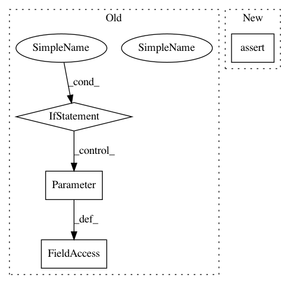

a2f7e929ef8efe86b1947dd7a6f6483fca23e7d6,test/jit/test_freezing.py,TestFrozenOptimizations,test_linear_to_mkldnn,#TestFrozenOptimizations#,1609
Before Change
self.run_pass("convert_frozen_ops_to_mkldnn", scripted_mod.graph)
FileCheck().check("ConvertToMKLDNN").check("aten::linear").check("ConvertFromMKLDNN").run(scripted_mod.graph)
if input_is_mkldnn:
inp = inp.to_mkldnn()
mod.weight = torch.nn.Parameter(mod.weight.to_mkldnn())
mod.bias = mod.bias if mod.bias is None else torch.nn.Parameter(mod.bias.to_mkldnn())
for _ in range(2):
// aten::equal not defined for mkldnn tensors
def to_dense(inp):
return inp.to_dense() if inp.is_mkldnn else inp
After Change
FileCheck().check("to_mkldnn").check("aten::linear").check("to_dense").run(scripted_mod.graph)
self.assertEqual(mod(inp), scripted_mod(inp))
self.assertEqual(mod(inp), scripted_mod(inp))
@unittest.skipIf(not torch._C.has_mkldnn, "MKL-DNN build is disabled")
def test_collapse_adjacent_conversions(self):
In pattern: SUPERPATTERN
Frequency: 3
Non-data size: 4
Instances
Project Name: pytorch/pytorch
Commit Name: a2f7e929ef8efe86b1947dd7a6f6483fca23e7d6
Time: 2021-03-01
Author: eellison@fb.com
File Name: test/jit/test_freezing.py
Class Name: TestFrozenOptimizations
Method Name: test_linear_to_mkldnn
Project Name: mlflow/mlflow
Commit Name: 06e9433720845ab9f12e7ea0d8a8982123f093c6
Time: 2020-12-18
Author: 39497902+dbczumar@users.noreply.github.com
File Name: tests/tracking/fluent/test_fluent_autolog.py
Class Name:
Method Name: test_universal_autolog_calls_specific_autologs_correctly
Project Name: pytorch/pytorch
Commit Name: a2f7e929ef8efe86b1947dd7a6f6483fca23e7d6
Time: 2021-03-01
Author: eellison@fb.com
File Name: test/jit/test_freezing.py
Class Name: TestFrozenOptimizations
Method Name: test_conv_to_mkldnn